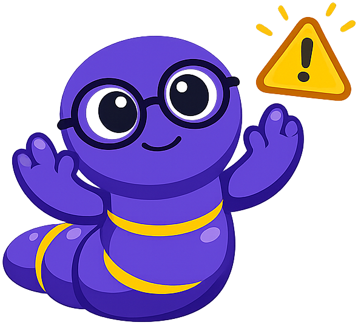

Media Literacy and Cognitive Bias¶
Welcome to Chapter 15, Readers
Welcome to Chapter 15! This chapter is about two of the most important — and most underestimated — skills for reading in the 21st century: media literacy and understanding cognitive bias. Media literacy is the ability to evaluate the information you encounter in media critically, accurately, and without being manipulated. Cognitive bias awareness is the ability to recognize the predictable, systematic errors in thinking that affect every human mind — including yours and mine. These are not separate skills; they reinforce each other. The media manipulation techniques in this chapter work precisely because they exploit the cognitive biases in the second half. Let's read between the lines — and learn to see the invisible forces shaping what we believe.
{kind=link}
Media Literacy: Why It Has Never Mattered More¶
Media literacy is the ability to access, analyze, evaluate, create, and act using all forms of communication — print, broadcast, digital, and social. The term is old (it dates to the 1970s), but its importance has grown dramatically with the transformation of the information environment over the last three decades. In the mid-20th century, the primary information challenge facing most citizens was access — getting enough reliable information about the world. In the 21st century, the primary challenge is the opposite: navigating an environment of overwhelming information abundance in which credible and incredible, accurate and false, well-intentioned and deliberately manipulative information are mixed together and algorithmically delivered based on engagement rather than accuracy.
The practical consequences of media illiteracy — the inability to evaluate information sources critically — are significant for individuals and for democratic society. Individuals who cannot evaluate information make worse decisions: about their health, about financial choices, about civic participation. Societies in which a significant portion of citizens cannot distinguish credible journalism from misinformation, or evidence-based analysis from propaganda, face governance challenges that earlier generations did not.
Digital literacy is the application of media literacy skills to digital media specifically. It encompasses the ability to find, evaluate, and create information using digital technologies; to understand how digital platforms work (algorithms, monetization, design choices); and to participate responsibly in digital communities. Digital literacy includes both technical skills (how to search effectively, how to check a source's origin, how to recognize manipulated images) and critical skills (how to evaluate the credibility of a search result, how to interpret a data visualization, how to recognize algorithmic personalization).
Source Evaluation¶
Source evaluation is the foundational skill of both media literacy and academic research. A source's value depends not on its format (article, book, website, video) but on its credibility, accuracy, and relevance to the question at hand.
The SIFT Method¶
Before examining an extended source evaluation framework, it helps to have a quick, reliable set of first moves for any source you encounter. The SIFT method, developed by digital literacy educator Mike Caulfield, provides exactly this. SIFT stands for: Stop, Investigate the source, Find better coverage, Trace claims.
Stop: Before reading, sharing, or reacting to any piece of information, pause. The impulse to immediately react — especially to emotionally resonant content — is exactly what misinformation exploits. Stopping is the first act of critical evaluation.
Investigate the source: Before reading the content, investigate the source publishing it. Who made this? What is their purpose and perspective? A quick lateral search (opening a new tab and searching the organization's name) takes thirty seconds and reveals enormous amounts of relevant context: who funds the organization, what their track record of accuracy is, whether they have a known political or commercial agenda.
Find better coverage: If you cannot immediately verify a claim from a source you do not know, look for better coverage — established, credible outlets that have reported on the same topic. If a claim is true and significant, multiple independent outlets with good editorial standards will likely have covered it. If only one source — especially an unfamiliar one — is reporting a surprising claim, treat it with skepticism.
Trace claims, quotes, and media: Claims rarely originate where you first encounter them. Trace the claim back to its original source: find the primary study behind the statistic, the full speech from which the quote was extracted, the original context of the image. Claims often change significantly — or reverse entirely — when traced to their origins.
Lateral Reading: The Fastest Source Verification Strategy
Professional fact-checkers don't read a source deeply and then decide if it's credible — they open new tabs and investigate the source laterally before reading its content. This is called lateral reading: instead of reading vertically into a source, you read horizontally across multiple sources to evaluate the first source's reputation and credibility. The technique is faster and more reliable than trying to evaluate credibility from the content alone. Practice it as a reflex: before you read an article you've never seen before, open a new tab and search the outlet's name.
{kind=link}
The CRAAP Test¶
The CRAAP Test (developed by Meriam Library, California State University, Chico) provides a more comprehensive framework for sustained source evaluation. CRAAP stands for: Currency, Relevance, Authority, Accuracy, Purpose.
Currency: How recent is the information? Currency matters more for some topics (medical research, current events, rapidly evolving technologies) than others (historical analysis, literary criticism). Check not just the publication date but whether the source has been updated, and whether its claims have been superseded by newer research.
Relevance: Is this source actually relevant to your research question? A source may be credible and accurate but address a related topic rather than your specific question. Assess whether the depth of treatment matches your need (introductory vs. in-depth, specific vs. general).
Authority: Who created this information, and what qualifies them to do so? For academic research, relevant credentials include advanced degrees in the relevant field, institutional affiliations, publication in peer-reviewed journals, and citation by other experts. For journalism, relevant credentials include established publication history, editorial oversight, and known standards of practice. Anonymous or pseudonymous sources lack verifiable authority.
Accuracy: Is the information supported by evidence? Are claims cited? Can the evidence be verified? Does the source distinguish between facts and opinions? Does it acknowledge uncertainty and limitations? Are there factual errors you can identify?
Purpose: Why was this information created? To inform? To persuade? To sell? To entertain? To generate outrage? Purpose shapes how information is framed, selected, and presented. Advertising content that appears to be journalism (native advertising) has a commercial purpose that shapes its content in ways the format may not make obvious. Think tanks and advocacy organizations often produce content that appears to be research but is designed to support a predetermined conclusion.
Fact-Checking Skills¶
Fact-checking is the practice of verifying whether specific factual claims are accurate by tracing them to primary sources, examining original data, and consulting authoritative sources. Formal fact-checking organizations — including PolitiFact, FactCheck.org, the Washington Post Fact Checker, Snopes, and the AP Fact Check — apply systematic methodologies to evaluate public claims, particularly political claims.
Fact-checking strategies for independent verification:
Identify the specific factual claim: Many statements mix factual claims with interpretive claims or predictions. Isolate the specific factual assertion that can be verified: not "the economy is doing poorly under the current administration" (interpretive) but "the unemployment rate rose from X% to Y% during this period" (specific and verifiable).
Find the primary source: Statistics, studies, and expert quotes are often cited without their original source. Finding the primary source reveals the original context, methodology, sample size, and limitations that are often omitted in secondary citation. A frequently cited "study" may turn out to be an industry-funded survey rather than peer-reviewed research.
Reverse image search: Images are frequently misused — captioned with incorrect contexts or mislabeled to support misleading claims. Google Reverse Image Search and TinEye allow you to trace an image to its original source and verify whether it is being accurately contextualized.
Check the date: Viral content frequently resurfaces in new contexts. An image from a natural disaster in one country may be shared as if from a current event in another. A statistic from five years ago may be presented as current. Always verify the date of creation and the date of the event depicted.
Misinformation Detection¶
Misinformation is false or inaccurate information — it may be spread by people who genuinely believe it is true. Disinformation is false information that is deliberately created and spread with the intent to deceive. Malinformation is information that is technically true but presented in a misleading context, with the intent to harm. Understanding these distinctions matters because the appropriate response differs: misinformation requires education; disinformation requires both education and resistance to coordinated manipulation campaigns.
Types of misinformation by format:
- Fabricated content: Entirely false information presented as fact, including fake news articles designed to look like legitimate journalism.
- Manipulated content: Genuine information that has been altered — an image edited, a quote truncated, a headline changed — to create a false impression.
- Misleading content: Accurate information used in a misleading way — a true statistic presented without the context that would change its meaning, or a real event characterized in ways that distort its significance.
- Satire misidentified as news: Satirical content (from outlets like The Onion) that is shared without recognition of its satirical intent, treating comedy as reporting.
- Imposter content: Content that impersonates a legitimate source — a fake account mimicking a news organization, a fabricated quote attributed to a real public figure.
Deepfakes and synthetic media: Artificial intelligence tools have made it increasingly easy to create realistic synthetic media — AI-generated images that look photographic, audio that replicates a real person's voice, and video that puts words in real people's mouths. Identifying synthetic media is becoming an essential component of misinformation detection. Warning signs include: unnatural blinking or facial movement in video, unusual backgrounds or edges in AI-generated images, audio that lacks the natural imperfections of real speech.
Social Media Literacy¶
Social media literacy is the specific application of media literacy skills to social media platforms, which present unique challenges that traditional media evaluation does not fully address. Social media platforms differ from traditional media in several ways that affect how information spreads and how users encounter it.
The virality-veracity gap: Virality and veracity are uncorrelated. On social media, false information has been shown in multiple studies to spread faster and farther than true information, in part because false information is more novel, emotionally arousing, and surprising — all qualities that social media algorithms reward with amplification. A post that generates strong emotional reactions (outrage, fear, disgust) receives more engagement and is shown to more people, regardless of whether its content is accurate. Understanding this mechanism prevents mistaking virality for credibility.
Filter bubbles and algorithmic personalization: Social media platforms show users content based on engagement data — what you have clicked, liked, shared, and watched. Over time, this algorithmic personalization creates a filter bubble: an information environment increasingly shaped by your existing preferences and beliefs, which the algorithm reinforces. Within a filter bubble, one encounter primarily confirms existing beliefs and is rarely challenged by contrary evidence or alternative perspectives. Filter bubbles make the world look more like you than it actually is.
The Filter Bubble Is Invisible From Inside

{kind=link}
Echo chambers vs. filter bubbles: These terms are sometimes used interchangeably but describe slightly different phenomena. A filter bubble is created by algorithmic personalization — the platform shows you less of what you would disagree with. An echo chamber is created by social selection — people choose to follow and engage only with those who share their views, and the community that forms reinforces those views through social pressure and norm enforcement. Both mechanisms produce similar results (exposure primarily to confirming information) through different processes.
Propaganda Techniques¶
Propaganda is communication — political, commercial, or ideological — designed to influence attitudes and behaviors by bypassing critical reasoning rather than engaging it. The term carries negative connotations because it names a manipulative intent, though not all persuasion is propaganda. The distinction lies in whether the communication engages the audience's critical faculties or works around them.
The Institute for Propaganda Analysis (1930s) identified seven classic propaganda techniques that remain relevant:
Name-calling: Attaching a negative label to a person, idea, or group to generate rejection without evidence: "socialist," "elitist," "extremist." The label does the work of argument, generating emotional rejection without requiring logical engagement.
Glittering generalities: Using highly positive but vague terms to generate approval without evidence: "freedom," "family values," "the American way." Like name-calling in reverse, glittering generalities short-circuit critical evaluation by attaching positive emotional associations to a position.
Transfer: Associating a position, person, or product with an authority or symbol that commands respect or approval (positive transfer) or with something disliked or feared (negative transfer). A politician who gives speeches in front of military veterans is using positive transfer; characterizing an opponent as "like Hitler" is negative transfer.
Testimonial: Using the endorsement of a celebrity, respected figure, or ordinary person to support a claim. Testimonials are legitimate when the endorser has relevant expertise; they are propaganda when they import credibility from an unrelated domain (a famous athlete endorsing a medical product).
Plain folks: Presenting oneself as an ordinary, relatable person to build trust and counter perceptions of elitism. The politician who eats at a local diner, the billionaire who talks about their humble origins, the policy advocate who frames their position as "common sense" — all use the plain folks technique.
Card stacking: Presenting only the evidence, arguments, and examples that support one's position while omitting or distorting contrary evidence. Card stacking is the propaganda equivalent of the fallacy of cherry-picking and is particularly hard to detect because the information presented may be accurate — it is the selective omission that creates the misleading impression.
Bandwagon: Appealing to the desire to belong and the fear of social exclusion: "Everyone agrees," "Join the millions who have already..." The bandwagon technique exploits the powerful human tendency to align with the perceived majority, suggesting that the correct belief is whatever most people hold.
Misinformation in Practice: Case Studies¶
Applying the misinformation detection framework to realistic cases helps develop the pattern recognition that makes fact-checking a practical skill rather than an abstract principle. The following cases illustrate how misinformation operates across different formats and contexts.
Case Study 1 — The truncated statistic: A widely shared social media post states: "Scientists found that chocolate consumption is correlated with Nobel Prize winners per capita." This is technically accurate — a 2012 satirical paper by Dr. Franz Messerli in the New England Journal of Medicine demonstrated this correlation as an example of how correlation can be absurd and misleading. But the post omits this context, presenting it as if chocolate eating causes intellectual achievement. The statistic is real; the interpretation is false; the omission of context converts accurate data into misinformation.
Detection strategy: Trace the original claim. Find the primary source (the Messerli paper). Read the paper's purpose. The abstract makes clear it is illustrating the misuse of correlation — the paper itself is a critique of the kind of reasoning the social media post exemplifies.
Case Study 2 — The real photo, wrong context: During a natural disaster, photographs of flooded streets and displaced people are widely shared with captions attributing them to a specific current event. The photos are real — but they are from a different disaster in a different country from five years earlier. The emotional impact is genuine; the specific information (where and when) is false.
Detection strategy: Reverse image search. Google Reverse Image Search will identify the original publication of the photograph, along with its accurate caption and date.
Case Study 3 — The expert misquote: A political argument includes the quote: "Albert Einstein said that the definition of insanity is doing the same thing over and over and expecting different results." The quote is widely attributed to Einstein but is not found in any of his writings or verified speeches; it appears to be apocryphal, likely originating in 12-step recovery programs. The appeal to Einstein's authority is false even though the observation itself may be reasonable.
Detection strategy: Quote verification via a reliable quotation database (Quote Investigator is particularly thorough) and cross-reference with Einstein's actual documented writings.
Case Study 4 — The selective statistic: An argument about immigration policy states: "Studies show that immigrants commit crimes at higher rates than native-born citizens." Studies on this topic actually consistently show the opposite: immigrants (including undocumented immigrants) are less likely to be arrested, convicted, or incarcerated than native-born citizens. The claim is not just wrong but directionally opposite to what the evidence shows — a clear case of disinformation.
Detection strategy: Find the primary studies. Searches using terms like "immigration crime rates research" lead to peer-reviewed studies in criminology journals and to reports from respected research institutions. The weight of evidence is unambiguous and contradicts the claim.
These cases illustrate that misinformation detection is not primarily a matter of fact-checking obvious lies — it requires attention to context, to the interpretation of statistics, to the sourcing of quotations, and to the direction of causal claims. The skills of academic research (Chapter 11) directly support misinformation detection: both require source evaluation, primary source tracing, and careful attention to what the evidence actually establishes.
Digital Literacy Tools and Practices¶
Digital literacy includes practical tool competency alongside critical evaluation skills. The following tools are widely used for media evaluation and fact-checking:
Search effectively: Academic and professional research uses more than Google's default search. Boolean operators (AND, OR, NOT) allow precise queries. Quotation marks search for exact phrases ("confirmation bias" finds that exact phrase; confirmation bias without quotes finds pages mentioning either word). The site: operator limits results to a specific domain (site:nih.gov vaccination searches only the NIH website). Date filters locate recent coverage or historical sources.
Evaluate domain names: Domain names are sometimes deliberately designed to mimic trustworthy sources. "ABCnews.com.co" is not ABC News — the ".co" suffix is not the US top-level domain. "Natural News" is not a neutral news site; it is a website with a documented history of publishing health misinformation. Domain evaluation is a quick, early-stage source check.
Check the "About" page: Any credible organization publishes an "About" page describing its mission, funding, editorial standards, and leadership. An absent, vague, or evasive "About" page is a significant credibility signal. Who funds an organization and what their interests are is directly relevant to evaluating potential bias in the organization's publications.
Use established fact-checking resources: PolitiFact (politifact.com) specializes in political claims and uses a "Truth-O-Meter" rating system. Snopes (snopes.com) covers viral claims across topics. FactCheck.org (factcheck.org) is run by the Annenberg Public Policy Center at the University of Pennsylvania. The Washington Post Fact Checker uses a "Pinocchio" rating system. AllSides (allsides.com) rates news outlets on a political bias spectrum and provides the same story covered from left, center, and right sources.
Reverse image search: Available through Google Images (images.google.com, upload an image or paste an image URL), TinEye (tineye.com), and built into some mobile browsers. Identifying where an image originally appeared often reveals whether it is being used in an accurate context.
Check publication dates of articles: Viral sharing often strips articles of their original publication dates or republishes old articles as if they were current. Many browsers allow you to check the publication date in the URL (many news sites include YYYY/MM/DD in their URL structure) or in the page metadata.
The Relationship Between Media Literacy and Cognitive Bias¶
The two halves of this chapter — media literacy and cognitive bias — are deeply interconnected. Effective media literacy requires cognitive bias awareness; cognitive bias awareness shapes how you experience and respond to media content. Understanding this connection deepens both frameworks.
Misinformation exploits cognitive biases deliberately: The most effective misinformation is not randomly distributed — it is strategically crafted to exploit specific cognitive vulnerabilities. False claims that trigger negativity bias (threatening, loss-framing information) spread faster than neutral false information. Propaganda techniques like transfer and glittering generalities exploit the halo effect and in-group favoritism. Filter bubbles are structurally designed to exploit confirmation bias — they create an information environment that systematically confirms existing beliefs while reducing exposure to challenging information. Understanding which biases are being targeted helps identify which manipulation techniques are being deployed.
Cognitive bias affects source evaluation: Confirmation bias produces motivated source evaluation: the same source receives higher credibility ratings when its conclusions confirm our existing beliefs than when they challenge them. A study reaching a politically unwelcome conclusion is scrutinized more intensively for methodological flaws than a study reaching a politically welcome conclusion. This asymmetric skepticism is a direct consequence of confirmation bias operating on source evaluation. Recognizing this tendency allows deliberate correction: apply the same level of scrutiny to confirming evidence as to challenging evidence.
Emotional manipulation and the availability heuristic: Fear-based media content is particularly effective because it exploits the availability heuristic — making certain threats seem more common and more immediate by ensuring they are vivid, emotionally charged, and repeatedly encountered. News coverage that disproportionately features violent crime, terrorism, or disease outbreaks (regardless of actual statistical rates) increases the perceived frequency of these events, contributing to distorted risk assessment and policy preferences shaped by distorted fear rather than accurate risk information.
The illusory truth effect: One of the most troubling cognitive phenomena for media literacy is the illusory truth effect: the tendency for repeated exposure to a false claim to increase its perceived credibility, even when the claim was already known to be false. This effect has been documented in multiple studies and operates even when people consciously know the claim is false at the moment they rate it as "true." Repetition creates familiarity; familiarity creates fluency; fluency is mistaken for truth. The practical implication for media literacy: avoid sharing misinformation even to debunk it, because the repetition of the false claim contributes to its illusory credibility. Instead, focus on the accurate information, not the correction.
Propaganda Analysis: Extended Application¶
Applying the seven propaganda techniques to real-world examples develops the pattern recognition that makes propaganda analysis a practical skill. The following extended application examines a composite example of political advertising and identifies the techniques at work.
Consider a hypothetical political campaign advertisement with the following elements: an American flag waving in the background, dramatic music, images of ordinary-looking families, a narrator who says "Senator Smith has voted with Washington elites seventy-three times while your hardworking family struggles," and a closing shot of the opposing candidate shaking hands with a controversial figure.
Transfer (positive): The American flag in the background transfers symbolic patriotic associations to the candidate's campaign without any argumentative connection.
Plain folks: The images of "ordinary-looking families" position the candidate's supporters as relatable working people, implying that the opponent represents elites rather than ordinary citizens.
Name-calling: "Washington elites" is a name-calling label that generates negative associations without defining what an "elite" is or why voting with them is wrong.
Card stacking: "Voted seventy-three times with Washington elites" presents a selective statistic that counts every vote as "elite" if it aligns with certain outcomes, regardless of the actual content of the legislation or the senator's reasoning.
Transfer (negative): The image of the opposing candidate with a controversial figure attempts to transfer the negative associations of that figure to the candidate, regardless of the context of the handshake.
Recognizing these techniques does not require deciding whether the advertisement is "right" or "wrong" politically — it requires identifying how the advertisement works rhetorically: which techniques it uses, what emotional responses it targets, and what analytical work it is asking the audience to skip.
Emotional manipulation in media refers to the deliberate use of emotional appeals in ways that bypass critical reasoning — designing content to trigger strong emotional responses that overwhelm analytical evaluation. Emotional appeals are legitimate and important in communication (see the discussion of pathos in Chapter 6); emotional manipulation is the exploitation of emotional responses to prevent rather than accompany critical thinking.
Common emotional manipulation techniques:
Fear appeals without accurate context: Presenting risks as larger, more immediate, or more personal than the evidence supports. Cable news coverage of rare but dramatic events (shark attacks, stranger abductions) creates distorted perceptions of common risks because the events are emotionally vivid even though they are statistically rare.
Outrage engineering: Content designed primarily to generate moral outrage — not because an outrageous event occurred, but because outrage maximizes engagement. Social media algorithms, which reward engagement, incentivize outrage-generating content regardless of its accuracy.
Manufactured urgency: Creating a sense that immediate action (share this now, donate today, call your representative before midnight) is necessary to prevent a catastrophe, often to prevent critical evaluation that might reduce compliance.
In-group protection framing: Presenting information as a threat to one's identity group — one's country, religion, political affiliation, or community — activates protective instincts that interfere with neutral evaluation. Content that frames a claim as an attack on "people like us" generates defensive processing rather than analytical processing.
Cognitive Bias: Introduction¶
Cognitive biases are systematic, predictable errors in thinking that affect all human minds — not errors of individual stupidity or ignorance, but patterns that arise from the shortcuts (called heuristics) our brains have evolved to process information efficiently. In most everyday situations, these shortcuts work well enough; they allow rapid decision-making in complex environments without the impossible cognitive cost of full rational analysis. But in high-stakes situations involving evidence evaluation, argument analysis, and critical reading, cognitive biases systematically distort perception and reasoning in predictable ways.
Understanding cognitive biases does not make you immune to them — that would require a level of metacognitive control that no human has achieved. What understanding does is give you a vocabulary for recognizing potential bias, a set of diagnostic questions to ask yourself, and a repertoire of debiasing strategies that reduce (but do not eliminate) the distorting effects of biases on your reasoning.
No One Is Immune to Cognitive Bias
One of the most consistent findings in cognitive bias research is that awareness of a bias does not reliably prevent it. Highly intelligent, educated, and reflective people exhibit the same cognitive biases as everyone else — often in domains where they feel most confident. The Dunning-Kruger effect, confirmation bias, and motivated reasoning appear in peer-reviewed academic publications, in expert testimony, and in the analytical work of trained scientists. The appropriate response to this is not despair but humility: when reading your own arguments, ask explicitly what you might be missing, who might disagree, and what evidence would change your mind.
{kind=link}
The Eighteen Cognitive Biases¶
The following sections define and illustrate the eighteen specific cognitive biases covered in this chapter, organized by the type of cognitive process each involves.
Information Processing Biases¶
Confirmation bias is the tendency to search for, interpret, and remember information in ways that confirm existing beliefs. People read news that aligns with their political views, remember evidence that supports their positions and forget evidence that challenges them, and interpret ambiguous evidence as supporting their existing beliefs. Confirmation bias is the most thoroughly documented cognitive bias and arguably the most consequential for critical reading and academic inquiry. Counterstrategies: deliberately seek out the strongest versions of opposing positions (steelmanning); when reading on a topic you care about, specifically look for evidence against your position.
Availability heuristic: When estimating the frequency or probability of something, people tend to rely on how easily examples come to mind rather than on statistical data. Vivid, emotionally charged, recent, or personally experienced events are easier to recall — and are therefore judged as more common or more probable than they actually are. Plane crashes are judged more dangerous than car crashes, though the statistical reverse is true; shark attacks dominate risk perception despite their statistical rarity. The availability heuristic distorts risk assessment and probability judgment, and it is heavily exploited by fear-based media coverage.
Recency bias is the tendency to overweight recent events and underweight older events. What happened most recently seems most representative, most important, and most predictive. Recency bias distorts historical perspective and is exploited by news cycles that prioritize novelty: the most recent economic report, political event, or social media controversy receives disproportionate attention relative to the long-term patterns that would better inform understanding.
Anchoring bias: When making estimates or judgments, people are systematically influenced by the first number or piece of information they encounter (the "anchor"), even when that information is arbitrary or irrelevant. In a famous demonstration, subjects who first saw a high random number estimated higher quantities than subjects who first saw a low random number. Anchoring affects salary negotiations (the first offer anchors the negotiation), consumer purchases (a crossed-out "original price" anchors the perceived value of a sale price), and academic evaluation (knowing a student's previous performance before grading their current work).
Social and Group Biases¶
In-group favoritism (also called in-group bias) is the tendency to evaluate members of one's own social group more favorably than members of out-groups — to attribute better intentions to in-group behavior, excuse in-group failures that one would criticize in an out-group, and seek information that affirms the in-group's values and positions. In-group favoritism operates across all group categories: political, national, religious, racial, and institutional. It is the cognitive mechanism underlying many forms of group-based prejudice.
Bandwagon effect: The tendency to adopt beliefs or behaviors because many others appear to hold them — to update one's beliefs based on perceived consensus rather than evidence. The bandwagon effect is exploited by propaganda techniques that manufacture apparent consensus, by marketing that emphasizes popularity ("the bestselling...," "millions of satisfied customers"), and by social media metrics that display engagement counts as signals of credibility.
False consensus effect: The tendency to overestimate how much others share your beliefs, values, and behaviors. People who hold a particular political view, religious belief, or personal preference tend to believe it is more widely held than it actually is. The false consensus effect inflates perceived support for one's own positions and contributes to surprise when others disagree — because the assumption is that disagreement is exceptional rather than common.
Stereotyping is the cognitive bias of applying generalized beliefs about a group to individual members of that group, regardless of individual variation. Stereotypes — whether positive or negative — substitute a category attribute for individual evaluation, and they introduce systematic error when the individual diverges from the stereotype (which is always, to some degree). Stereotyping is not limited to racial or ethnic categories; it operates across all social categories: gender, age, profession, educational background, and regional identity.
Decision-Making Biases¶
Dunning-Kruger effect: The tendency for people with limited knowledge in a domain to overestimate their competence in that domain, while experts tend to underestimate theirs. The original research by Kruger and Dunning (1999) showed that people who scored lowest on tests of logical reasoning, grammar, and humor also rated their own performance most highly. The mechanism is that the same knowledge that enables competent performance also enables accurate evaluation of one's own performance — those who lack the knowledge also lack the metacognitive capacity to recognize their lack. Conversely, as expertise increases, awareness of complexity, uncertainty, and the limits of one's knowledge also increases, producing expert humility.
Sunk cost fallacy: The tendency to continue an investment (of time, money, effort, or commitment) because of the resources already invested, rather than because of the future value of continued investment. "I've already put three hours into this; I might as well keep going" — the three hours are gone regardless of the decision; the relevant question is only whether the next hour will produce value. The sunk cost fallacy produces irrational persistence in bad decisions, whether in personal relationships, business strategies, or policy commitments.
Motivated reasoning: The tendency to construct arguments, evaluate evidence, and reach conclusions based on what one wants to be true rather than on what the evidence actually supports. Motivated reasoning is qualitatively different from simple confirmation bias in that it is not just passive filtering of information — it is an active process of argument construction in service of a pre-decided conclusion. "Working backwards from the verdict to find the evidence" is motivated reasoning. It is particularly pernicious because it feels from the inside like rigorous analysis.
Perception and Evaluation Biases¶
Framing effect: The tendency for the presentation or framing of information — not just its content — to significantly affect how it is evaluated. "90% fat-free" and "contains 10% fat" are logically equivalent but produce different consumer responses. A medical treatment described as having a "90% survival rate" is rated more favorably than one described as having a "10% mortality rate." The framing effect demonstrates that evaluation is not purely rational — it is sensitive to how information is linguistically and contextually packaged.
Halo effect: The tendency for a positive (or negative) impression in one domain to influence evaluation in unrelated domains. Physically attractive people are judged as more intelligent, more competent, and more trustworthy than unattractive people, even when controlling for other variables. Well-written prose is judged as more factually accurate than identical content presented in poor prose. The halo effect is the mechanism behind the common advice to make presentations look polished — the appearance of quality influences perception of underlying quality.
Negativity bias: The tendency for negative information, experiences, and emotions to receive more weight in evaluation and memory than positive information of equivalent intensity. Negative feedback is remembered more vividly than positive feedback; losses loom larger than equivalent gains (this specific version is called "loss aversion"); a single negative event can outweigh many positive events of equal or greater magnitude. Negativity bias in news media contributes to the documented tendency for negative news to receive more attention and engagement than positive news.
Hindsight bias: After an event, the tendency to believe it was more predictable than it actually was before it occurred — the "I knew it all along" effect. Hindsight bias distorts the evaluation of decision-making: knowing the outcome makes it seem obvious that the correct decision was the one that led to that outcome. Hindsight bias makes it easy to be unfairly critical of decisions made under genuine uncertainty and makes it difficult to learn from past events by accurately reconstructing the pre-event information environment.
Survivorship bias: The tendency to focus on visible successes while ignoring invisible failures, leading to systematic overestimation of the probability of success. The classic example is the World War II bomber analysis: engineers initially proposed adding armor to the parts of returning planes that had the most bullet holes — but statistician Abraham Wald pointed out that the engineers were only looking at planes that had returned. The bullet holes showed where planes could be hit and still survive; the missing data was where the planes that did not return had been hit. Survivorship bias produces overoptimistic assessments of entrepreneurship ("most startups fail" is a survivorship correction), investment strategies ("this approach has always worked" ignores strategies that did not work and were abandoned), and creative success narratives ("follow your passion and you'll succeed").
Attribution bias: The tendency to explain behavior differently depending on whether it is one's own behavior or another's. The fundamental attribution error is the tendency to overattribute others' behavior to their character (dispositional attribution) rather than their situation (situational attribution): "He cut in line because he's rude" rather than "He cut in line because he didn't see the line." The self-serving bias is the complementary tendency to attribute one's own successes to character and ability ("I aced the test because I'm smart") while attributing one's own failures to situation ("I failed the test because it was unfair"). Together, these biases systematically favor the self and disfavor others.
Diagram: Cognitive Bias Spotter¶
Run Cognitive Bias Spotter Fullscreen
Interactive Cognitive Bias Practice Tool
Type: Interactive Diagram
sim-id: cognitive-bias-spotter
Library: p5.js
Status: Specified
Learning Objective: Apply (L3 — Apply) knowledge of cognitive biases by correctly identifying which bias or biases are operating in realistic scenario descriptions.
Description: A card-based practice tool presenting realistic short scenarios (two to four sentences each) drawn from academic, social media, news, and everyday decision-making contexts. Each card presents a scenario, and the user selects from the chapter's 18 biases (presented as a scrollable list) which bias or biases are most clearly illustrated. After submitting, the tool reveals the correct answer(s) with an explanation that connects the specific details of the scenario to the definition of the bias.
Scenario categories (minimum 5 scenarios per category): News consumption and social media, academic research and writing, personal decision-making, group dynamics and social interaction, media production and framing. Total scenarios: at least 30, arranged in increasing order of difficulty (some scenarios illustrate a single clear bias; harder scenarios illustrate two or more biases operating simultaneously).
Score tracking: The tool tracks correct identifications in a session and at the end provides a summary showing which bias categories the user performed best and worst on, with a recommendation to review the definitions of missed biases.
Canvas: Minimum 650px wide, minimum 400px tall. Card text readable at all viewport sizes (minimum 14px font).
Cognitive Biases in Reading and Academic Writing¶
Understanding cognitive biases is not only a personal metacognitive skill — it is an analytical tool for reading texts and evaluating arguments more accurately.
Reading for bias in sources: When evaluating a source, consider which cognitive biases might be operating in its production. A political commentary that presents only evidence supporting its preferred position may reflect motivated reasoning and card-stacking. A news article that leads with the most emotionally arresting detail may be exploiting negativity bias and availability heuristic. An expert who confidently presents a controversial claim as obvious fact may be exhibiting confirmation bias or the Dunning-Kruger effect.
Identifying bias in your own arguments: In academic writing, cognitive bias most often appears in the research and drafting phases. Confirmation bias drives the selection of sources: you find the ones that support your position and overlook or discount those that challenge it. Motivated reasoning drives the interpretation of evidence: you construct the most favorable reading of confirming evidence and the most critical reading of disconfirming evidence. Revision is the phase where debiasing should be most deliberate: read your argument as an adversarial reader would, specifically looking for unsupported leaps, ignored counter-evidence, and evidence interpreted more generously than your argument acknowledges.
Debiasing strategies: No strategy eliminates cognitive bias, but several reduce its distorting effect:
- Consider the opposite: When reaching a conclusion, deliberately argue the opposite conclusion — not to abandon your position, but to identify what evidence you may have underweighted.
- Seek disconfirming evidence: Actively search for the strongest evidence against your position. If your argument cannot survive engagement with the strongest counterargument, it needs strengthening.
- Take an outside view: Step back from the specifics of your case and ask: "What would an informed, disinterested expert think of this argument?" or "What would I think of this argument if someone I disagreed with were making it?"
- Introduce decision delays: For high-stakes decisions or strongly held positions, wait. The initial emotional response to new information is the one most distorted by bias; time allows more deliberate processing.
- Diversify information sources: Seek out credible sources that present information from different perspectives and that cover events your primary sources downplay or ignore.
Media Literacy in Academic Argument¶
The connection between media literacy, cognitive bias awareness, and academic writing is direct and practical: the skills for evaluating sources and reasoning that you develop as a media-literate reader are the same skills you apply as an academic writer when constructing and reviewing your own arguments.
Source evaluation as research methodology: The CRAAP Test and SIFT method, applied to your own research sources, determine which sources are credible enough to cite and which require additional verification or should be excluded. Academic writing in the research tradition (Chapters 9–11) requires exactly the source evaluation skills developed in this chapter. A research paper that cites sources without evaluating their credibility, authority, or potential bias undermines its own argument — and demonstrates the kind of credulity that media literacy is designed to prevent.
Writing about biased sources: When your research leads you to sources that appear credible but seem to exhibit a clear bias — think tanks that advocate for specific positions, news outlets with documented records of partisan coverage, advocacy organizations that publish policy reports — the appropriate response is not necessarily to exclude those sources but to cite them with appropriate attribution and context. "According to the Heritage Foundation, a conservative think tank that advocates for limited government..." provides the reader with the context needed to evaluate the source appropriately. Concealing or ignoring a source's potential bias while citing it as a neutral authority is an academic integrity problem.
Recognizing your own motivated reasoning in argument construction: When you are deeply committed to an argumentative position — whether because of personal values, previous writing, or a genuinely strong belief — motivated reasoning is most likely to distort your research and argument construction. The corrective is deliberate adversarial self-review: after drafting an argument, ask yourself explicitly: What would the most informed, most skeptical critic of this argument say? What evidence have I not included because it complicated my argument? Is the evidence I have cited fairly representative of what the research as a whole shows, or have I selectively emphasized confirming studies while downplaying disconfirming ones?
Analyzing media texts as primary sources: This chapter's frameworks also provide tools for literary and rhetorical analysis. When analyzing a political speech, an editorial, an advertisement, or a news article as a primary source — which is a common assignment in English and social studies — identifying propaganda techniques, evaluating rhetorical strategies, and analyzing how emotional appeals are used are all forms of textual analysis that this chapter's frameworks support. A rhetorical analysis of a political speech that identifies its use of glittering generalities, transfer, and in-group protection framing is applying the propaganda analysis framework to literary close reading.
Filter Bubbles, Echo Chambers, and Democratic Discourse¶
The filter bubble and echo chamber phenomena have consequences that extend beyond individual information quality to collective democratic discourse. A democracy depends, at minimum, on citizens who share enough common factual ground to have productive disagreements about values and policy. When citizens inhabit completely different informational universes — not disagreeing about values but about basic facts — democratic deliberation becomes impossible.
The political scientist Eli Pariser, who popularized the term "filter bubble" in his 2011 book of the same name, argued that the personalization of the internet represented a fundamental shift in how citizens encounter information, away from the shared public sphere of broadcast media (which, whatever its flaws, exposed all viewers to the same news) toward an individualized information environment in which each person sees a different version of reality shaped by their prior behavior. The algorithmic architecture of contemporary social media platforms has deepened this dynamic considerably since Pariser's original analysis.
Addressing filter bubbles requires both individual and structural responses. At the individual level, deliberate information diversification — following credible sources across the political spectrum, reading outlets that make you uncomfortable, engaging with unfamiliar perspectives — partially counteracts algorithmic personalization. At the structural level, ongoing debates about platform design, content moderation, and algorithmic transparency address the architecture that creates filter bubbles in the first place.
For high school students, the practical implication is awareness and intentionality: being conscious of where your information comes from, asking whose perspectives are absent from your information diet, and developing the habit of checking a claim in multiple independent sources before accepting it as established fact.
News Literacy: Distinguishing Journalism from Opinion¶
A specific and practically important dimension of media literacy is the ability to distinguish journalism from opinion — two forms of news writing that appear in the same publications, often on the same website, but that make very different claims and operate by very different standards.
News reporting aims to accurately describe events and their context. Good journalism attributes claims to named sources, distinguishes what is known from what is alleged, uses qualified language appropriately ("alleged," "according to...," "officials said"), and is subject to editorial fact-checking standards. News articles that meet professional journalism standards can be cited as credible evidence for factual claims.
Opinion and commentary presents the author's views, interpretations, and arguments. Op-eds, columns, editorials, and opinion essays are clearly labeled in professional publications but may appear in social media shares without their genre label. Opinion pieces can be cited as examples of a perspective or argument but cannot be cited as evidence of factual claims — the author's opinion, however well-reasoned, is not evidence that the claim is true.
Analysis and interpretive journalism occupies a middle ground: it reports facts but also offers interpretation and context. This genre — common in publications like The Atlantic, The New Yorker, and long-form sections of major newspapers — is valuable for developing deep understanding of complex issues but requires the same critical evaluation that opinion pieces do, because the interpretive frame the author applies is not the only possible frame.
Misidentifying opinion as news reporting — treating a columnist's argument as a factual report — is one of the most common media literacy errors and is deliberately exploited by content designed to look like news reporting while expressing political advocacy. Developing the habit of identifying genre before reacting to content is a foundational media literacy practice that takes less than ten seconds and prevents this error reliably.
The two frameworks in this chapter are most powerful when used together. Effective critical reading and media literacy require both external evaluation tools (source evaluation, fact-checking, propaganda detection) and internal awareness (recognizing which cognitive biases might be affecting your evaluation of the information you encounter).
A practical integrated approach: When encountering a significant piece of information, apply SIFT first — stop, investigate the source, find better coverage, trace the claim. Then apply a brief cognitive bias check — Am I inclined to believe this because it confirms what I already believe (confirmation bias)? Am I discounting this because it challenges my views (motivated reasoning)? Is the emotional intensity of the content affecting my evaluation (negativity bias, availability heuristic, emotional manipulation)? Does the way this is framed affect my reaction (framing effect)?
Neither step alone is sufficient. Source evaluation without cognitive bias awareness leaves you vulnerable to motivated evaluation — you will evaluate sources more critically when they challenge your views than when they confirm them. Cognitive bias awareness without source evaluation skills gives you self-awareness without the practical tools to verify information. Together, they constitute a genuine critical reading practice.
A practical daily habit: Media literacy and cognitive bias awareness are most effective when they become reflexive habits rather than explicit analytical procedures. Like physical training, the goal is automaticity — eventually, the habit of pausing before sharing, of noting the source before reacting, of registering an emotional response before accepting a claim, becomes second nature. Building these habits requires deliberate practice. Two specific practices help: (1) Before you share any news article or social media post, identify the source and spend thirty seconds assessing its credibility. Over time, this thirty-second practice becomes faster and more reliable. (2) Once a week, read one substantive article from a credible source whose perspective regularly differs from your usual information sources. Not to change your mind, necessarily, but to maintain awareness that well-informed, thoughtful people can interpret the same world differently — which is itself an important corrective to the false consensus effect.
Academic and civic implications: The habits of mind cultivated in this chapter — source evaluation, bias recognition, evidence triangulation, and critical emotional regulation in response to media content — are not just academic skills. They are the practices of informed citizenship. Democracy depends on citizens who can evaluate competing claims, resist manipulation, and deliberate from a basis of reasonably shared facts. Developing these habits while you are still in school means you carry them into every civic and professional role you will hold as an adult.
Key Takeaways¶
This chapter has developed the media literacy and cognitive bias frameworks essential for critical reading in the 21st-century information environment. Before moving to Chapter 16, confirm that you can do the following:
- Define media literacy and digital literacy and explain why both matter in the current information environment.
- Apply the SIFT method (Stop, Investigate the source, Find better coverage, Trace claims) to a piece of media content.
- Apply the CRAAP Test criteria (Currency, Relevance, Authority, Accuracy, Purpose) to evaluate a source.
- Define misinformation, disinformation, and malinformation and give an example of each.
- Explain what a filter bubble is and how social media algorithms create one.
- Identify at least five of the seven classic propaganda techniques with examples.
- Define cognitive bias and explain why cognitive bias affects all humans regardless of intelligence or education.
- Define and give a real-world example of all 18 cognitive biases covered in this chapter.
- Explain the relationship between confirmation bias and motivated reasoning.
- Describe at least three debiasing strategies and explain how each works.
- Apply the integrated approach: use both external source evaluation and internal bias checking when evaluating information.
Chapter 15 Complete — You're a Critical Reader of the Information Landscape
Media literacy and cognitive bias awareness — you now have both the external toolkit for evaluating sources and the internal framework for recognizing the distortions in your own perception. These are lifelong skills that grow more valuable the more you practice them. Chapter 16 moves to two forward-looking frameworks: systems thinking (how to see the patterns and feedback loops behind complex events) and AI literacy (how to use AI writing tools ethically, effectively, and with full awareness of their limitations). Every word tells a story — and now you have the skills to question the story the information landscape is telling you.
{kind=link}